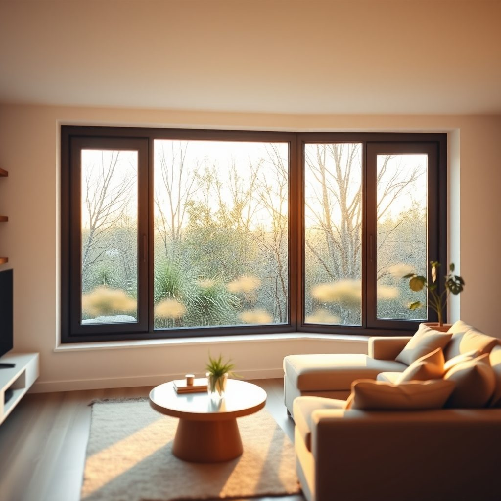

Алюминиевый профиль для остекления в Северо-Западном округе

Читатель спрашивает: реально ли в Северо-Западном округе Москвы самому поставить алюминиевый профиль для остекления? Услуга тут востребована, но самостоятельная работа требует расчёта, ровных рук и понимания узлов.
Можно ли самому смонтировать алюминиевый профиль без опыта?
Можно, если система простая, проём ровный и есть время на расчёт. Сложные тёплые конструкции лучше собирать с мастером. Своими руками делают качественно только по схеме и без спешки.
Итог
Итог всегда один: назвать следующий шаг заказчику — бесплатный замер, расчёт на месте и фиксированная цена в договоре.
Алюминиевый профиль для остекления своими руками в Северо-Западном округе?
Да, но не всё. Сначала считайте задачу. Где стоит профиль: лоджия, балкон, витраж, перегородка. Какой контур: холодный или тёплый. От этого зависит система, толщина, терморазрыв, стеклопакет. Дальше замер. Не по старой раме, а по проёму. Проверьте диагонали, кривизну стен, завалы. Ошибка в пару сантиметров вылезет щелью или клином. Потом узлы. Углы режут под 45 или 90, зависит от профиля. Стыки обрабатывают, снимают заусенцы. Внутрь ставят соединители, уголки, крепёж. Нельзя сажать всё на один герметик. Он держит воду и воздух, но не геометрию. Стекло и заполнение ставят после сборки каркаса. Штапик, уплотнитель, дренаж — не мелочи. Вода должна уходить наружу, а не в комнату. Если делаете сами, работайте по инструкции системы. Не смешивайте детали разных серий. Каждый производитель даёт свою схему. Соблюдайте зазоры, момент затяжки, порядок монтажа. Анкера и дюбели подбирайте по основанию. Кирпич, бетон, газобетон держат по-разному. Крепить только к стене, не к утеплителю или обшивке. После установки проверьте створки. Они должны ходить без рывков, прижим — равномерный. Если рама встала с натягом, фурнитура умрёт быстро. Качественно — это когда не только стоит ровно, но и служит без ремонта. Делаем качественно: не на скорость, а по шагам. Тогда самостоятельная работа имеет смысл.
Что проверить перед монтажом своими руками?
Проверка начинается до заказа. Ещё раз пройдите рулеткой ширину, высоту, глубину проёма в трёх точках. Запишите минимум и максимум. Разница покажет кривизну. Проверьте уровень пола и потолка. Если основание гуляет, раму нельзя ставить в натяг. Проверьте, куда уйдёт вода. Нужен уклон в сторону улицы, дренажные отверстия, отливы. Если воды некуда уходить, зимой её разорвёт. Проверьте крепёж. Точки ставят не реже чем по схеме системы. Обычно у углов и по шагу. В кирпич и бетон — одни метизы, в газобетон — другие. Не крепите только к пене. Она не держит. Пена утепляет и заполняет, но не несёт. Проверьте гидроизоляцию. Стык стены и рамы должен быть закрыт паропроницаемой лентой снаружи и пароизоляцией внутри. Иначе точка росы окажется в шве. Проверьте комплектность. Уплотнители, штапики, уголки, кляммеры, заглушки, фурнитура. Мелочь ищут потом, когда рама уже стоит. Проверьте инструмент. Уровень, отвес, рулетка, угольник, шуруповёрт, нож, герметик. Пилу для алюминия с мелким зубом. Болгарка с грубым диском портит кромку и защитное покрытие. Перед монтажом разложите детали на полу. Соберите сухо. Проверьте углы и диагонали. Только потом герметик и финиш. Если сомневаетесь в узле, остановитесь и уточните. Лучше переделать на земле, чем на высоте. Качественно — это когда проверено до, а не исправлено после.
Бесплатный замер
Оставьте заявку на бесплатный замер: приедем в удобное время, посчитаем на месте и зафиксируем цену в договоре.
Призыв Алюминиевое остекление террасы в Северо-Западном округе — что важно знатьКак ухаживать за алюминиевым остеклением террасы в Северо-Западном округе — что важно знать? В Москве, в Северо-Западном округе, мы ставим такое остекление и…
Алюминиевое остекление террасы в Северо-Западном округе — что важно знатьКак ухаживать за алюминиевым остеклением террасы в Северо-Западном округе — что важно знать? В Москве, в Северо-Западном округе, мы ставим такое остекление и… Сколько стоит алюминиевое остекление цены в Северо-Западном округеСколько стоит алюминиевое остекление и какие цены в Северо-Западном округе? В Северо-Западном округе Москвы мы делаем алюминиевое остекление качественно: от …
Сколько стоит алюминиевое остекление цены в Северо-Западном округеСколько стоит алюминиевое остекление и какие цены в Северо-Западном округе? В Северо-Западном округе Москвы мы делаем алюминиевое остекление качественно: от …